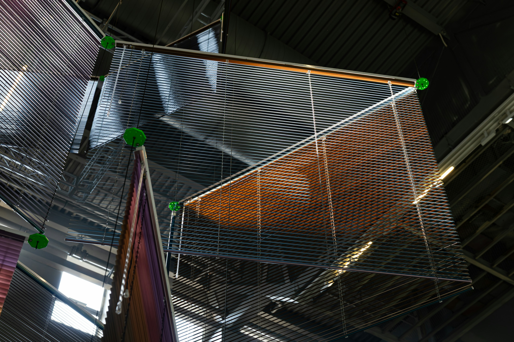
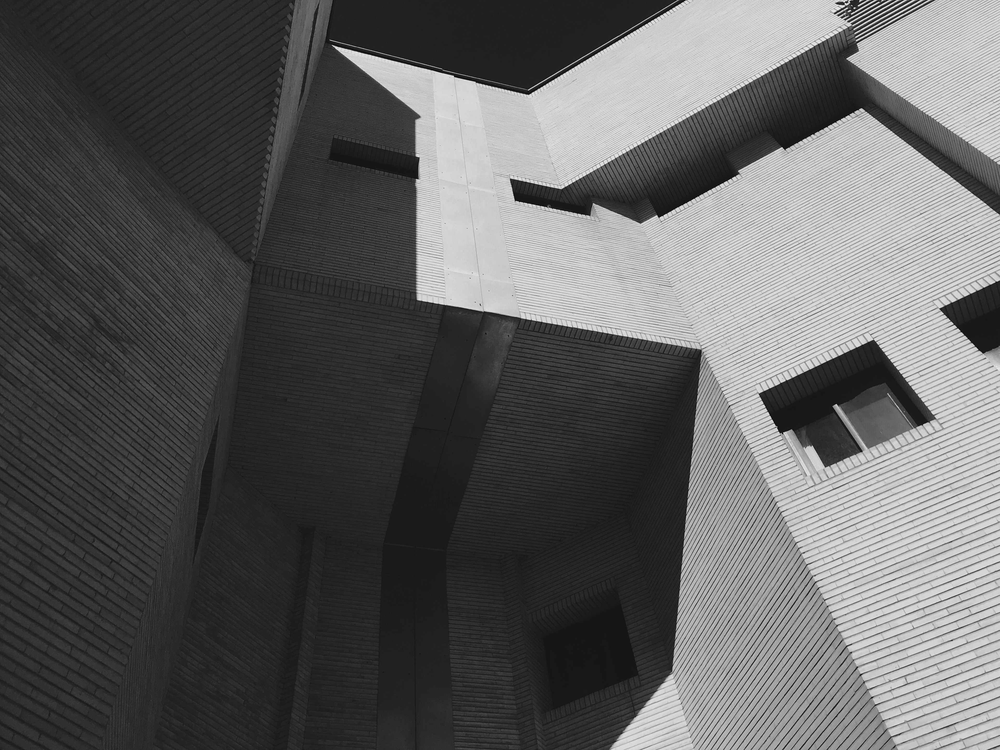
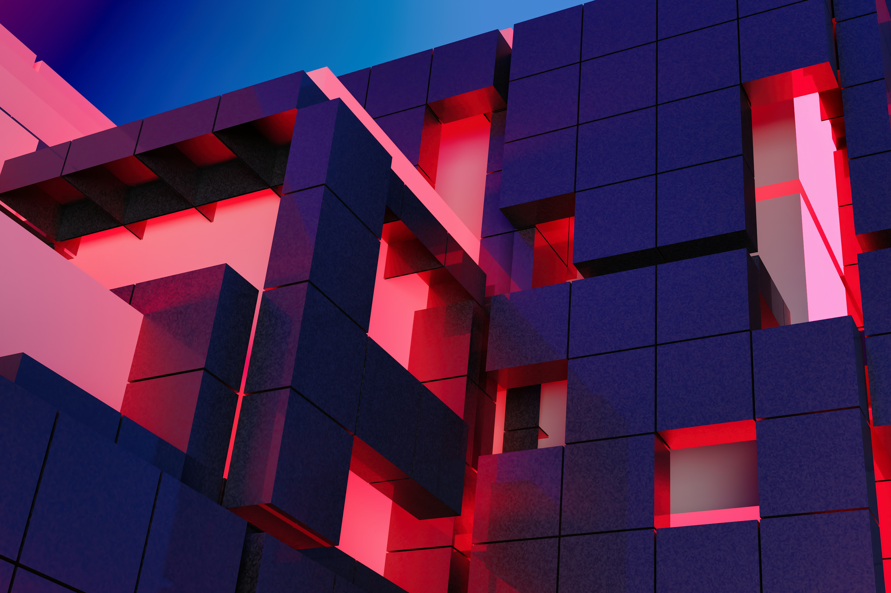

Hub
Full Project Index
Directory / Launch Paths / Archive
Every Never Wet project in one clean launch surface.
Same visual system as the homepage, tuned for fast scanning: featured paths first, then the complete project index with direct links into each live experience.



Project Hub
A directory that feels connected to the homepage.
This page now shares the homepage typography, motion layer, cards, cursor feedback, transitions, and generated project data instead of carrying a separate dark interface.
Featured Work
Launch first
Full Index